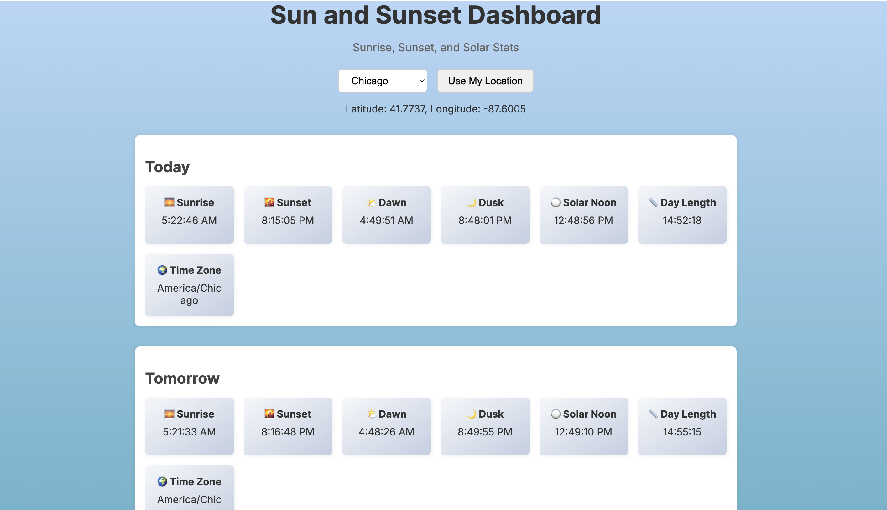
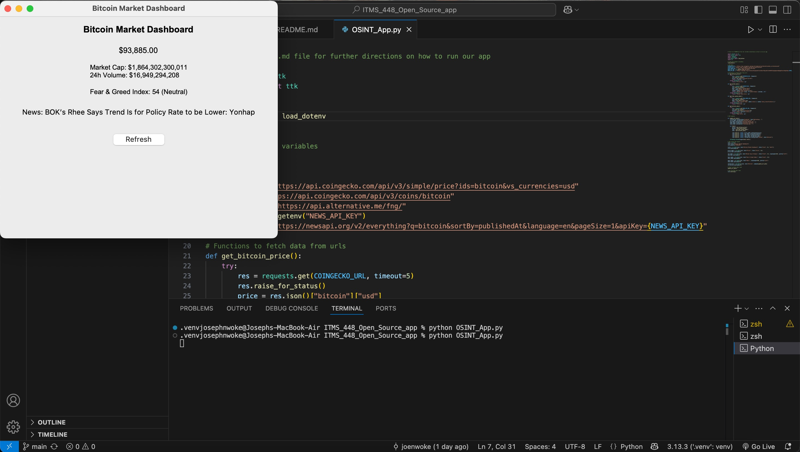

Web app
Sunrise/Sunset Dashboard
A responsive dashboard that displays sunrise, sunset, and solar noon data from external APIs.
Projects
These projects reflect my interest in useful interfaces, live data, and software that makes information easier to understand.

Web app
A responsive dashboard that displays sunrise, sunset, and solar noon data from external APIs.

Desktop tool
Tracks real-time Bitcoin prices through API calls and displays live market data in a graphical interface.